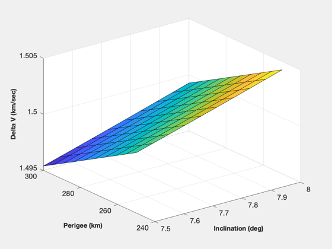
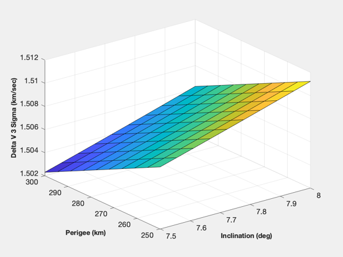
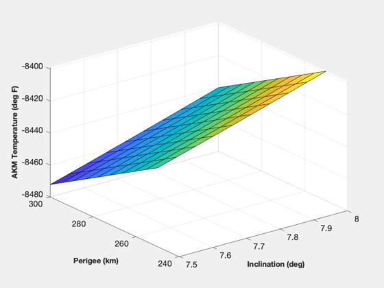
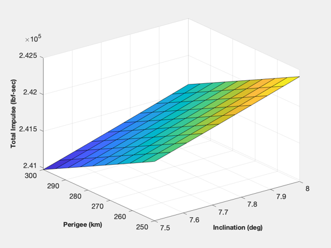

Plan the AKM burn by looking at the AKM thrust variations as a function of temperature.
For a given AKM you can tune the burn by controlling the temperature of the motor when it ignites.
Since version 2. ------------------------------------------------------------------------- See also Constant, NewFig, XLabelS, YLabelS, ZLabelS, RARP2E, ApogeeDV, DVAKM -------------------------------------------------------------------------
Contents
%------------------------------------------------------------------------------- % Copyright 1994-1998 Princeton Satellite Systems, Inc. All rights reserved. %-------------------------------------------------------------------------------
Constants
%---------- mu = Constant('mu'); degToRad = Constant('Deg to Rad'); mToIn = Constant('M to In'); lbFToKg = Constant('Lb Force to Kg'); lbFToN = Constant('Lb Force to N'); rEarth = Constant('Earth Radius Equator');
Spacecraft parameters
%---------------------- mF = 855.6027; m0 = 955.1421 + mF + sum([117.8944 117.8944]); iT = [406965 407940]*lbFToN; temp = [40 90]; threeSig = 0.00463; rGeo = 42164.16; nPer = 10; nInc = 10; hPer = linspace(250,300,nPer); inc = linspace(7.5,8,nInc); dV = zeros(nPer,nInc); dV3 = zeros(nPer,nInc); t = zeros(nPer,nInc); iTRP = zeros(nPer,nInc); for i = 1:nPer for j = 1:nInc rPer = hPer(i) + rEarth; eT = RARP2E( rGeo, rPer ); dV(i,j) = ApogeeDV(eT,inc(j)*degToRad,rGeo,0,0); [tOut,dV3Sig,iTR] = DVAKM(iT,temp,threeSig,mF*lbFToKg,m0*lbFToKg,dV(i,j)*1000); t(i,j) = tOut; dV3(i,j) = dV3Sig/1000; iTRP(i,j) = iTR/lbFToN; end end NewFig('Delta V (km/sec)'); surf(inc,hPer,dV) YLabelS('Perigee (km)'); XLabelS('Inclination (deg)'); ZLabelS('Delta V (km/sec)'); NewFig('Delta V 3 Sigma (km/sec)'); surf(inc,hPer,dV3) YLabelS('Perigee (km)'); XLabelS('Inclination (deg)'); ZLabelS('Delta V 3 Sigma (km/sec)'); NewFig('AKM Temperature (deg F)'); surf(inc,hPer,t) YLabelS('Perigee (km)'); XLabelS('Inclination (deg)'); ZLabelS('AKM Temperature (deg F)'); NewFig('Total Impulse (lbf-sec)'); surf(inc,hPer,iTRP) YLabelS('Perigee (km)'); XLabelS('Inclination (deg)'); ZLabelS('Total Impulse (lbf-sec)'); %-------------------------------------- % PSS internal file version information %--------------------------------------   